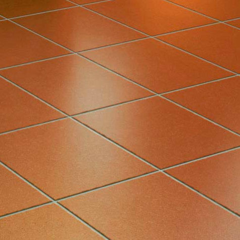
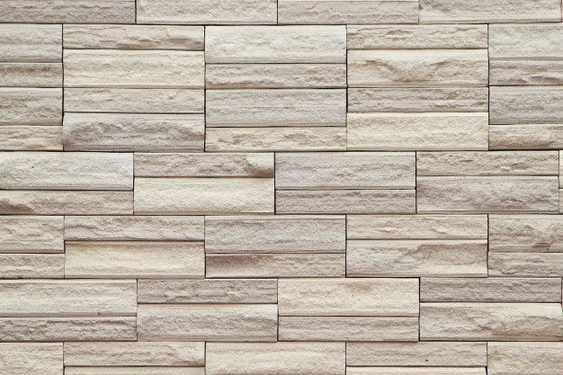

>>>>>perspective
<html>
  <head>
    <script src="https://aframe.io/releases/1.7.1/aframe.min.js"></script>
     <script src="https://supereggbert.github.io/aframe-htmlembed-component/dist/build.js"></script>

        </head>
  <body>
    <a-scene>
      <a-assets>
        
        
        <a-asset-item id="chica" src="toaru_majutsu_no_index_misaka_mikoto.glb"></a-asset>
      </a-assets>
    <a-entity gltf-model="#chica" scale="0.1 0.1 0.1" position="0 -1 -4.5"></a-entity>
    
     <a-entity> 
    <a-box position="0  0 -4.5" width="0.2" height="0.2" depth="0.2" animation="property: position;from:0 0 -4.5; to: 0 0.5 -4.5; dur: 2000; easing: linear; loop: true" animation__2="property: rotation; to: 0 360 0; loop: true; dur: 10000" color="mediumseagreen"></a-box>
 
      <a-box position="0 0 -5.5" rotation="0 0 0" width="2" height="2" depth="0.1" src="#pared"></a-box>
      <a-box position="0 -1 -4.5" rotation="-90 0 0" width="2" height="2" depth="0.1" src="#suelos"></a-box>
      <a-box position="-1 0 -4.5" rotation="0 90 0" width="2" height="2" depth="0.1" src="#pared"></a-box>
      <a-box position="1 0 -4.5" rotation="0 90 0" width="2" height="2" depth="0.1" src="#pared"></a-box>
      <a-box position="0 1 -4.5" rotation="-90 0 0" width="2" height="2" depth="0.1" src="#pared"></a-box>
    </a-entity> 
     <a-sky color="#ECECEC"></a-sky> 
    </a-scene>
  </body>
  </html>
      =======
